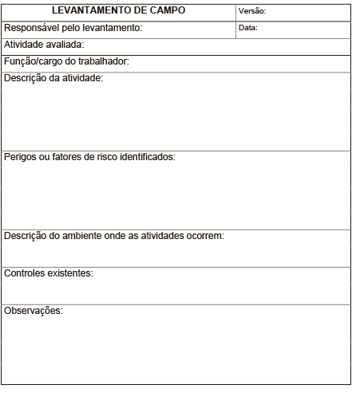
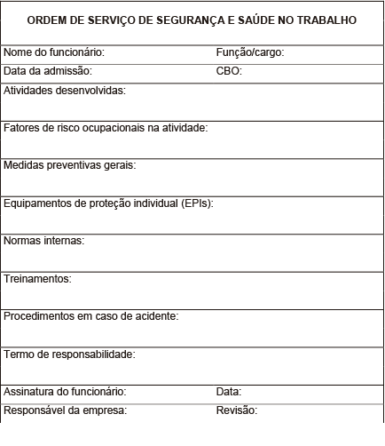

Para realizar alguns procedimentos na área de segurança do trabalho, é necessário conhecer as rotinas dos trabalhadores, os processos e a forma como estes são realizados. Essas informações podem servir de base para conduzir uma análise de risco, construir procedimentos de trabalho, definir estratégias de controle e até mesmo propor novas formas de execução das tarefas.
Mesmo que o técnico em segurança do trabalho já esteja habituado ou já conheça as rotinas de trabalho dos colaboradores, elas devem ser documentadas para garantir que os requisitos normativos sejam atendidos e realizados sobre uma base comum.
Um dos requisitos normativos de caráter fundamental é a ordem de serviço de segurança e saúde no trabalho. Ela é um documento que contém as principais orientações ao trabalhador para evitar a ocorrência de acidentes e o desenvolvimento de doenças ocupacionais.
Para elaborar ou revisar documentos que contenham a descrição das atividades laborais de um trabalhador, é imprescindível fazer um levantamento de campo. Tal levantamento envolve uma etapa de entrevistas com o trabalhador para obter informações sobre a rotina deste – mesmo quando já existe um documento com essas informações –, pois o trabalho prescrito pode diferir do trabalho real e ainda ser uma consequência natural devido às mudanças de equipamentos ou de tecnologia de produção, por exemplo.
Não há uma frequência para a realização das entrevistas ou das revisões. Contudo, pode-se determinar algum padrão de gestão da empresa que exija uma revisão com intervalos de tempo fixos.
Ainda, quando alguma alteração importante ocorre, como mudança de função do trabalhador, inserção e operação de novas máquinas, mudança dos sistemas de proteção e das formas de controle, uma revisão da documentação é necessária.
Sempre que houver uma atualização, é importante manter alguma forma de controle sobre os documentos (por exemplo, controle de versão, forma de arquivamento e divulgação).
Para realizar as entrevistas e o levantamento de campo, alguns pontos importantes devem ser revisados. São eles:
Todas as atividades que são realizadas pelo trabalhador, inclusive as não rotineiras, tais como manutenção, devem ser descritas.
Quando o processo de trabalho é complexo e envolve um risco substancial, como na manutenção de rede elétrica energizada, pode ser interessante descrever o processo por etapas. Para outros casos, de menor complexidade, como nas atividades desempenhadas por um pintor (que não envolvam trabalho em altura), às vezes uma descrição geral é suficiente.
Indicação ou não de uso de equipamentos e máquinas, forma como a atividade é realizada (manualmente, por exemplo), postura de trabalho, entre outros, são exemplos de informações importantes para o levantamento.
Todos os perigos associados à atividade ou pelo menos os riscos ocupacionais envolvidos devem ser descritos. Em uma etapa posterior, é necessário identificar as consequências para a segurança e para a saúde que decorrem da exposição aos riscos ocupacionais.
Eventualmente, o ambiente de trabalho pode oferecer fatores de risco adicionais aos trabalhadores. Por exemplo, uma atividade de inspeção de peças automotivas que ocorre em área de produção pode expor o trabalhador ao ruído de máquinas.
Outros exemplos de situações que podem envolver fatores de risco adicionais são trabalho em ambientes alagadiços, trabalho em áreas classificadas (áreas com potencial de formação de atmosferas explosivas), atividades com exposição à carga solar, à radiação ultravioleta (como em atividades realizadas na presença de solda elétrica).
Os fatores de risco adicionais exemplificados podem ser tratados diretamente na etapa de identificação de perigos, desde que o responsável pelo levantamento considere o ambiente onde ocorre a atividade.
Durante o levantamento das demais informações, devem-se coletar dados sobre as medidas de proteção empregadas. Tais medidas são aquelas já aplicadas para controle na fonte, controle na trajetória e controle no receptor.
Quando existentes, as medidas de controle devem ser verificadas em campo e depois confrontadas com os documentos ou as análises que definiram o tipo e as formas de uso dessas medidas, incluindo limitações ou restrições de emprego. Em atividades que envolvam diferentes risco ou níveis diferentes de riscos, é necessário relacionar cada etapa com os controles empregados.
O número de informações a serem coletadas depende do propósito de uso dos dados obtidos. Quando a empresa não conta com uma cultura de segurança ou quando existem pontos falhos no gerenciamento desta, um número maior de informações deve ser coletado visando a atender às normas regulamentadoras (NRs), mantendo a empresa dentro de um nível aceitável de gestão de segurança. Esses dados são utilizados na elaboração de programas, na definição de procedimentos e treinamentos e em análises de risco.
Caso haja a necessidade de um trabalho que abranja toda a empresa ou um grande número de atividades e trabalhadores, é preciso, antes do início do levantamento, fazer um planejamento que priorize aquelas atividades de caráter crítico.
As atividades críticas envolvem perigo imediato à vida ou à saúde (por exemplo, atividades com movimentação de grandes cargas; em espaços confinados e em altura; em rede elétrica energizada; com manuseio de substâncias carcinogênicas; com exposição a fontes radioativas; em ambientes hiperbáricos).
Independentemente dos objetivos do levantamento de informações, a identificação de perigos ou do fator de risco deve ser realizada separadamente da avaliação do nível de risco.
O nível de risco deve ser definido em etapa posterior, pois poderão existir condições para que determinado fator de risco, considerado inicialmente irrelevante, seja, após uma análise mais detalhada, considerado importante.
Eventualmente, para fazer os levantamentos, não é possível dispor de um equipamento eletrônico, como um computador, para realizar as anotações. Sendo assim, é interessante ter um modelo (figura 1) para uso em campo. O uso de um modelo auxilia a manter uma organização nos dados e também ajuda a não esquecer alguma informação.
Além disso, na descrição das atividades laborais, a linguagem utilizada deve ser clara. Embora não seja obrigatório, é preferível utilizar verbos no infinitivo, conforme exemplos a seguir.
Figura 1 – Exemplo de planilha de campo
A figura apresenta um modelo de planilha com os seguintes campos: versão; responsável pelo preenchimento; atividade avaliada; função do trabalhador; descrição das atividades realizadas; perigos e riscos ocupacionais; descrição do ambiente de trabalho; controles existentes; e, por fim, observações.
Clique para baixar o conteúdo em PDF.
Exemplo 1
Empresa: clínica odontológica.
Função: técnica em saúde bucal.
Descrição das atividades: auxiliar em cirurgias odontológicas; recolher material de uso odontológico (instrumentação) e resíduos originados no processo; esterilizar material odontológico por meio de higienização com produto de limpeza (detergente enzimático) e passagem em autoclave; operar equipamento manual do tipo seladora; operar equipamento de raios X móvel, para radiografias da arcada dentária; revelar as imagens dos raios X com revelador e fixador específicos.
Exemplo 2
Empresa: hotel.
Função: auxiliar de manutenção.
Descrição das atividades: auxiliar na execução das atividades de manutenção preventiva, baseando-se em checklist; verificar e inspecionar o funcionamento de bombas e caixa d’água, iluminação, caldeira; ler e registrar o consumo de gás, água e energia elétrica; executar manutenção corretiva nos apartamentos envolvendo elétrica e hidráulica; realizar pequenos reparos de alvenaria e marcenaria; inspecionar os equipamentos de combate a incêndio.
A ordem de serviço é um documento fundamental na área de segurança do trabalho e tem como objetivo principal organizar as informações sobre aspectos relacionados à segurança dos trabalhadores, visando a prevenir as ocorrências de acidentes e as doenças ocupacionais.
A NR-1 estabelece que os empregados devem receber informações sobre as questões de segurança de seu ambiente de trabalho. Embora a norma estabeleça essa necessidade, não há um modelo definido ou uma única opção para que essas informações sejam repassadas. Muitas empresas utilizam um documento chamado “ordem de serviço” para atender a esse item. Além de cumprir um requisito legal, a ordem de serviço constitui um registro de que o trabalhador recebeu as informações necessárias.
Como a ordem de serviço agrega informações, a construção dela depende de outros dados. O início da elaboração desse documento – e de muitos documentos de segurança e saúde no trabalho – requer o conhecimento das atividades que serão desenvolvidas e dos perigos à segurança e à saúde associados à atividade.
Após a etapa de mapeamento das atividades (figura 1), prossegue-se para uma análise preliminar de riscos (APR), a qual leva em conta três parâmetros: gravidade da lesão ou da doença relativa ao risco; frequência de exposição ao risco; e probabilidade de ocorrência da lesão ou da doença.
Quando um risco é classificado como relevante na APR, medidas para controlá-lo são propostas. Caso já haja um conjunto de medidas de controle, estas são avaliadas no momento em que o parâmetro “probabilidade de ocorrência da lesão ou da doença” é avaliado.
Quando a APR estiver concluída, em alguns casos é preciso, para as atividades críticas, elaborar permissões de trabalho. A permissão de trabalho (PT) é um documento estruturado como uma checklist, no qual todos os requisitos devem ser atendidos para que a execução da atividade seja liberada.
Os requisitos da PT também podem ser oriundos das NRs que determinam certas condições obrigatórias para a atividade. Por exemplo, a NR-33, que trata de espaços confinados, exige a disponibilidade de equipe de resgate de emergência. Portanto, um dos pontos da PT é a disponibilidade da equipe.
Na NR-33, tal permissão é chamada de PET (permissão de entrada e trabalho). Independentemente da exigência de uma PT (ou PET), os requisitos normativos que se relacionam às atividades ou aos riscos ocupacionais devem ser considerados para a elaboração das ordens de serviço.
Concluídas tais etapas, um treinamento deve ser estruturado com base na análise de riscos e em algumas NRs. Nesse momento, a ordem de serviço de segurança e saúde no trabalho já pode ser desenvolvida ou atualizada. Assim, quando o trabalhador ingressar em suas rotinas, ele já terá recebido as instruções de segurança e uma via da ordem de serviço. Aliás, quando o trabalhador receber a sua via da ordem de serviço, é fundamental que ela possa ser rastreada.
Se a empresa não conta com um padrão estabelecido para a ordem de serviço, um modelo inicial (figura 2) pode auxiliar na elaboração desse documento. Os seguintes campos podem estar presentes:
Todas as atividades que são desenvolvidas em determinada função devem ser descritas. Aqui também podem ser incluídas as atividades que o trabalhador não está apto a executar, mas que guardam alguma relação com as rotinas dele. Se forem incluídas, é importante ficar clara a diferenciação no texto. Um campo adicional pode ser criado, caso haja necessidade.
Os fatores de riscos físicos, químicos, biológicos, ergonômicos e de acidentes inerentes à atividade e ainda aqueles oriundos do ambiente de trabalho devem ser descritos. Quando vários fatores de risco se apresentam, é útil separá-los por tipo de atividade desenvolvida.
As formas de proteção existentes para prevenção de acidentes e doenças ocupacionais devem ser mencionadas. As medidas preventivas gerais contemplam as medidas de ordem e de organização do trabalho. Quando é preciso utilizar outros documentos, eles podem ser referenciados aqui. Equipamentos de proteção individual (EPIs) não são descritos neste campo.
Os EPIs a serem utilizados em cada etapa das atividades devem ser citados. Como os EPIs podem variar em função do tipo de fator risco ou da intensidade deste, um campo exclusivo é mais adequado.
Algum padrão determinado pela empresa e que deve ser seguido pelo trabalhador precisa ser estipulado e descrito neste campo. Inclusive, quando este campo existir, pode fazer referência a outros documentos.
Aqui devem ser listados os treinamentos recebidos pelo funcionário até a data de emissão da ordem de serviço. Tal menção não substitui os registros de treinamentos.
Em caso de acidente de trabalho, deve ser descrito o que trabalhador deve fazer. Uma informação básica deste campo é o setor da empresa ou quem deve ser comunicado em caso de ocorrência do acidente.
A estrutura da ordem de serviço pode incluir um campo de termo de responsabilidade, no qual o trabalhador é advertido sobre as consequências do descumprimento do estabelecido no documento.
Embora esse documento seja um guia para a adoção de práticas seguras pelos trabalhadores, ele não elimina as inspeções de campo realizadas pelo técnico em segurança do trabalho.
As inspeções têm caráter preventivo e não punitivo. Assim, se algum desvio é constatado, deve ser verificado se as instruções foram passadas em linguagem adequada para os trabalhadores, se eles entendem a importância das proteções empregadas e se os equipamentos de proteção são substituídos com a frequência determinada.
Figura 2 – Exemplo de ordem de serviço
A figura apresenta um modelo de ordem de serviço. Além dos campos já comentados, ela apresenta os seguintes campos na parte superior: nome do funcionário, data de admissão, função/cargo e Código Brasileiro de Ocupações (CBO). Na parte inferior, estão os campos: assinatura do funcionário, responsável da empresa, data e revisão.
O conhecimento das atividades desempenhadas por um trabalhador, considerando os perigos envolvidos e o ambiente de trabalho, constitui uma etapa fundamental na prevenção de acidentes e de doenças ocupacionais e que deve ser documentada.
Conhecer as atividades é a base para a elaboração de uma série de documentos na área de segurança, tais como a ordem de serviço de segurança e saúde no trabalho, já trabalhada neste conteúdo.